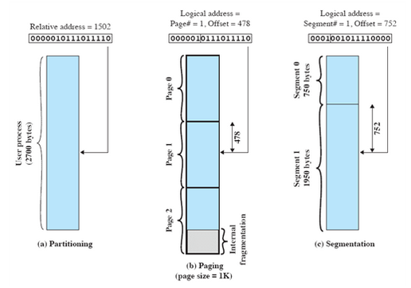
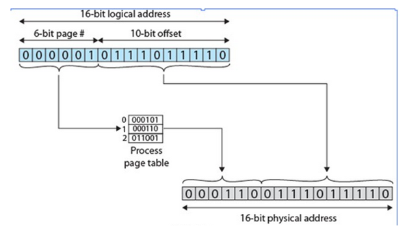
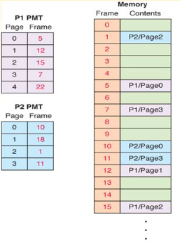
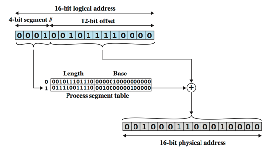
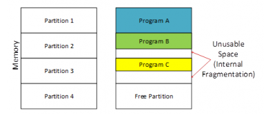
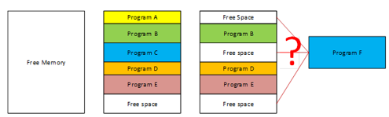

-
Memory Management Techniques
Principles of Memory Management
The following labs supplement the class notes and demonstrate some of the workings of the Memory Management Techniques plus some examples of fundamental principles in Memory Management.
- Time for you to practice by going through the examples to help you understand the memory management techniques in better depth
-
Swapping
- The total time taken by swapping process includes the time it takes to move the entire process to a secondary disk and then to copy the process back to memory, as well as the time the process takes to regain main memory.
For example
Assume the user process is of size 2048KB and on a standard hard disk where swapping will take place has a data transfer rate around 1MB per second.
The actual transfer time of the process to or from memory will take:
2048KB / 1024KB per second
= 2 seconds
= 2000 milliseconds
- Now considering in and out time, it will take the 4000 milliseconds (4 secs) plus other overhead where the process competes to regain main memory.
Roll out, roll in Swapping Technique
- A swapping variant used for priority-based scheduling algorithms;
lower-priority process is swapped out so higher-priority process can be loaded and executed
Major part of swap time is transfer time; total transfer time is directly proportional to the amount of memory swapped
If the next processes to be put on CPU is not in memory, a process needs to be swapped out and swap in target process, then the context switch time can then be very high:
100MB process swapping to hard disk with transfer rate of 50MB/sec
Swap out time of 2000ms
Plus swap in of same sized process
Total context switch swapping component time of 4000ms (4 seconds)
EXERCISE
- What is meant by memory thrashing?
-
Paging Example
A logical address in a paged memory management system begins as a single integer value relative to the starting point of the program written as
16-bit addresses are used and the page size is 1K=1024 bytes
- The relative address of 1502(base 10) = 0000010111011110(base 2)

With a page size of 1K and an offset field of ten bits needed, leaving 6 bits for the page number.
Therefore relative address 1502 corresponds to an offset of 478=0111011110(base 2) on page 1 =000001(base 2) which yields the original 16-bit number 0000010111011110(base 2)

- Suppose that this page is residing in main memory frame 6(base 10)=000110(base 2), then the physical address is frame number 6, offset 478(base 10)=0001100111011110(base 10)
Producing the Physical address
- To get this, the page in the Page Map Table (PMT) needs to be looked up to find the frame number in which it is stored.
- Then multiply the frame number by the frame size and add the offset to get the physical address
- If process 1 is active, a logical address of <1, 222> would be processed as follows:

- Page 1 of process 1 is in frame 12
- Therefore the corresponding physical address is 12 multiply by 1024+222 = 12510.
- Invalid Logical Addresses occur when the page number is out of bounds or the offset is larger than the size of a frame.
-
Segmentation
A simple segmentation scheme would make use of a segment table for each process and list of free blocks in main memory.
The segment table for each process contains:
the starting physical addresses of that segment.
the length of that segment (for protection by ensuring invalid addresses are not used)
- When a process enters the Running state, the special register gets loaded with the starting address of the process’s segment table.
Presented with a logical address (segment number, offset) = (n, m)
- the CPU extracts the segment number (n) of the logical address
- This is used as an index to the process segment table to obtain the starting physical address k and the length l of that segment
- The physical address = m + k (in contrast with paging)
- The hardware also compares the offset m with the length l of that segment to determine if the address is valid, if the offset>=l the address is invalid
- Logical address 0001001011110000, which is segment number 1, offset 752
- Suppose this segment is residing in RAM starting at physical address 0010000000100000, then the physical address is 0001001011110000+0010000000100000=0010001100010000

-
Fragmentation
Internal Fragmentation
This occurs when fixed size memory allocation technique is used. Memory allocation is based on fixed-size partitions where after a small size application is assigned to a slot, the remaining free space of that slot is wasted

Consider the figure above where memory allocation is done dynamically.
- In dynamic memory allocation, the allocator allocates only the exact needed size for that program.
- First memory is completely free.
- Then the Programs A, B, C, D and E of different sizes are loaded one after the other and they are placed in memory contiguously in that order.
- Then later, Program A and Program C closes and they are unloaded from memory.
- Now there are three free space areas in the memory, but they are not adjacent.
- Now a large program called Program F is going to be loaded but neither of the free space block is not enough for Program F.
- The addition of all the free spaces is definitely enough for Program F, but due to the lack of adjacency that space is unusable for Program F.
